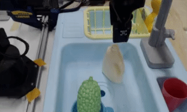

Compositional Foundation Models for Hierarchical Planning
Abstract
To make effective decisions in novel environments with long-horizon goals, it is crucial to engage in hierarchical reasoning across spatial and temporal scales. This entails planning abstract subgoal sequences, visually reasoning about the underlying plans, and executing actions in accordance with the devised plan through visual-motor control. We propose Compositional Foundation Models for Hierarchical Planning (HiP), a foundation model that leverages different modalities of knowledge to solve long-horizon tasks by integrating the different levels of decision-making. We use a large language model to construct symbolic plans that are grounded in the environment through a large video diffusion model. Generated video plans are then grounded to visual-motor control, through an inverse dynamics model that infers actions from generated videos. To enable effective reasoning within this hierarchy, we enforce consistency between the models via iterative refinement. We illustrate the efficacy and adaptability of our approach in three different long-horizon table-top manipulation tasks.
Compositional Foundation Models for Hierarchical Planning
We propose Compositional Foundation Models for Hierarchical Planning (HiP), a foundation model composed of different expert models. Each of these models is trained on different modalities of existing Internet data and jointly construct a physically executable plan to solve long-horizon tasks.
Task Planning With Large Language Models Large language models are trained on a vast amount of data on the Internet, and captures powerful semantic priors on what steps would be reasonable to take to accomplish a particular task. Given a task specified in language and the current observation, we use a pretrained LLM as a plan proposer, which outputs language subgoal decompositions to achieve a final goal.
Visual Planning With Video Models Text-to-video models are trained on a vast amount of video information, and captures information about the physics of objects and the semantics of how objects should move to accomplish different tasks. We leverage text-to-video model as a visual plan proposer, which generates different plausible observation trajectories conditioned on current observation and a given subgoal.
Action Planning Through Inverse Dynamics The egocentric images on the internet images provide a powerful visual prior for inferring inverse dynamics. Our action planner uses an existing pretrained vision model on egocentric images and generates plausible different action plans to execute a visual plan.
Iterative Refinement for Hierarchical Plan Generation Given different task, visual, and action proposal models, we leverage iterative refinement as a planner to obtain a plan that satisfies constraints across all three levels of foundation models.
Results Overview
Visualization of Successful HiP Execution
Paint Block Results
Object Arrange Results
Kitchen Tasks Results
Related Works
|  |
We cast the sequential decision making problem as a text-conditioned video generation problem, where, given a text-encoded specification of a desired goal, a planner synthesizes a set of future frames depicting its planned actions in the future, and the actions will be extracted from the generated video. Our policy-as-video formulation can represent environments with different state and action spaces in a unified space of images, enabling learning and generalization across a wide range of robotic manipulation tasks. |

|
We illustrate how conditional generative modeling is a powerful paradigm for decision-making, enabling us utilize a reward conditional model to effectively perform offline RL. We further illustrate how conditional generative modeling enables us to compose multiple different constraints and skills together. |

|
Diffuser is a denoising diffusion probabilistic model that plans by iteratively refining randomly sampled noise. The denoising process lends itself to flexible conditioning, by either using gradients of an objective function to bias plans toward high-reward regions or conditioning the plan to reach a specified goal. |
|
We present a method to combine different large pretrained models together by having individual models communicate with each other through iterative consensus. We illustrate how this combination of models can do zero-shot VQA, image generation, reasoning, and image generation. |